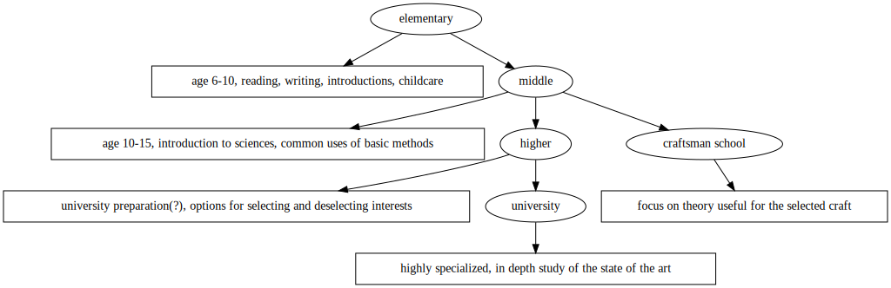

I think the core problem I have with the education system(s) as it exists today is an unmet expectation.
It is somewhat strongly implied that society does "teaching" for the mutual benefit of both the student and the society that will benefit from the more sophisticated member.
Where things get weird is what this teaching is actually supposed to contain.
The implication would be that all would be beneficial, some more practical, some theoretical, some as "must know" for the cultural background.
Different people place a different amount of importance on different aspects, so it's difficult to arrive at a "perfect mix".
Still, you would assume that there is a reasonable correlation between what the education system tries to transmit and what is actually beneficial. If that's not measured, there is no way to use the non-existant measurement to justify what is being done.
In my case, the relation between things I did, things I wanted to do and things I actually find useful now, is terrible.
I think a generalized, repeatable analysis would be interesting.
The current school system largely groups by age and depth of topics
It has the awfully messed up concept of a "general education" that is supposed to introduce to special subjects and give a broad overview of what exists.
The problem I have with it, is that it often loses itself in boring, impractical details.
It grades awareness and understanding of things it has no business judging.
Like "how well someone can draw". What the fuck. Maybe someone doesn't want to paint pictures.
Concerning topics, some classes and topics, although tangetially interesting, didn't really serve any purpose. Especially contemporary art where it was tried to be integrated, was awful. The classics are classics mostly because they're so good they have a survivorship bias.
here is a table of subjects, subjectively rated by enjoyment and the "general agreement" that even though I didn't like how it was done, I agree that it is necessary.
| subject | enjoyment rating | agreement rating | description | |
|---|---|---|---|---|
| music | 0 | 0 | boring and useless to me, a relic from a time when that shit influenced social status | |
| pictoral art | 2 | 4 | laws of correct construction and why things grab attention and are pleasing are interesting. | |
| math | 4 | 4 | highly relevant for sciences | |
| language1 | 3 | 2 | some basics where covered, some questionable selection of theatre pieces. Exclusively shitty books. | |
| language2 | 3 | 4 | had the luxury of starting with vocab and focusing on pratical application. | |
| history | 3 | 2 | supposedly highly relevant, who learns from it and what is subjective. | |
| politics | 1 | 2 | basically propaganda. | |
| sport | 2 | 4 | no actual education/theory, basic attempts at fitness | |
| chemistry | 2 | 1 | some theory, no useful applications. | |
| physics | 4 | 1 | more theory, no useful applications. |
when it comes to the agreement, there is a threefold disagreement:
| obviously, practically useful | theoretically interesting | of cultural importance |
|---|---|---|
| basic multiplication; "When you have 5 guests for your birthdayparty and you want 2 muffins for each person, how many muffins do you need?" is a relevant question. | statistics; is most commonly used to express (quasi) scientific results or surveys. If you don't care for science or other people's opinion, this is irrelevant. | poetry; It doesn't do it for me. Story telling is interesting and relevant, poetry is a "useless" art. |
There are different approaches to what makes things important, basically giving one of these priority.
Flawless execution or close to it is desirable but unattainable. Sometimes, no, often, no always, pratical experience is necessary for theory building and understanding. So it can never be "not important".
There is still some difference between teaching only "need to know" things, and explaining the theory behind them.
The spokespeople of business often stress pratical training, because they want their workers to be good at the simple tasks they give them.
I think it would have been useful to have a different pratical skillset in school. Basic burocracy should be a thing and should not stop at how to write a letter.
There is a group of people who have the absolutely deluded idea, that if children are only taught the beautiful complexities of the theory involved, they will be motivated to dive deeper into the subject. Which is beyond wrong.
This is mostly from the people who ask for more proofs in math, because that's what happens in universities, but I have also encountered it in languages, music, arts.
Huge parts of the theory that is being taught in school, is completely useless. In most cases, for those interested in the subject, it's redundant to what is being taught at university, and for those who are not, it's simply an additional layer of nonsense they have to survive.
I was personally interested in physics and chemistry, I enjoyed learning it.
But I had the presence of mind to notice how nobody else in physics class even interacted with the teacher. And I completely understand that people do not need theory of mechanics or optics or chemical orbitals to go about their daily business.
Even as an engineer, those theories are at best tangential to the bulk of the work.
There are certain literary classics that somehow compose the cultural identity of a people. Maybe that idea is a bit antiquated. Or maybe the old identity is a bit lost to time.
Romeo and Juliet actually had some valuable lessons. Don't trust your emotions when you're a teenager. Don't overreact and kill yourself. Whatever is going on, could be untangled if you just sit down and talk it through.
I love some other pieces of theatre, because they convey some quasi theory of the state of the world that is important to be known.
The classic greek tragedy is the result of multiple conflicting sets of laws or rules that don't allow a positive outcome, because they all demand capital punishment.
E.g. Antigone, daughter of the old king, is forbidden by the new king to bury the body of her father. Burial is the law of the gods. She chooses to bury her father, is killed by the new king, who is in turn cursed for violating the law of the gods and dies.
"Sometimes it is possible to commit no mistakes and still lose. That's life." Jean Luc Picard.
Schiller's "Räuber" is the story of a misunderstanding, the second son of a noble convinces the first son that he is being disowned. As revenge, the first son creates a bandit group that terrorizes the country for decades. When the father finally dies, the son returns to uncover the truth.
What consitutes this cultural sphere and what should be and what shouldn't be in it, is a big, important topic that shouldn't be left to the school administration.
The majority of the books we had to read in school were super boring.
Anyway fuck Goethe.
the biggest, most insulting, tonedeaf thing that I was witness to in terms of actual education at the university level, was the math professor who taught fourier transformation.
Fourier transformation is the basic theory for "wave decryption". It drives all radio communication. Smartphones, satellites, you name it. Hugely important, relevant and a FUN idea.
...and that moron simply didn't mention the application. He held a 90 minute lecture on how to do whatever to a wave mix and didn't mention how important it is, once.
There is the area of supposedly "need to know"/"must know" theories. To those specialized in the area, all steps toward their specialization are relevant steps. To everyone else, only the last node where it branches is really relevant.
Also, some theories are essential to understand, but never applied by hand, except in case of accident or blackout. The mentioned fourier transformation is such a theory. Applied all the time, but only consciously built in by a handful of engineers on the planet.
It has been shown that motivation is critical to learning. Unmotivated people don't learn.
Motivation cna be extrinsic or intrinsic, where intrinsic is often more impactful and useful.
Extrinsic motivation gives some external reward for completing a task. Like money, praise,etc..
Intrinsic motivation does not, it relies on the feelings and emotions of what we like and want to do.
When extrinsic motivation is removed, the learning stops. Intrinsic motivation can't be removed.
I often encountered misunderstandings, of two kinds:
Teachers would assume that *no* motivation was present, try to introduce extrinsic motivation and fail, because the supposed "reward" was shit, or because there was already intrinsic motivation present and the external reward seemed to cheapen the experience.
Teachers would assume strong intrinsic motivation for things that weren't obvious and leave the learning to the students. See the example of fourier transforms. A math professor finds math fascinating enough that a new method do math is it's own reward. An engineering student just wants to get shit done and pass.
There probably should be a third kind, not "because I'm paid", not "because it's the right thing", but "because it enables something I want".
The 3rd kind can make you really miserable, but would have helped in my anecdote.
In my case, I thought there was some specialized, secret/obscured knowledge to engineering that would only be taught at university level. There isn't. It's not even turtles all the way down.
It's 90% "genius"/ the blind spot of the AI discussion.
As a side note, I think it is generally underestimated how curious humans are. Given an environment, we will naturally explore it.
Presented with knowledge we will naturally explore and question it. It is not necessary to encourage, guide or even force this.
In fact, these can create counterproductive emotions. I know I react with hostility when someone tries to sit me down to just listen and not explain why.
For an appropriate level of discussion, the official plans and goals of the respective boards would have to be public and subject to discussion and change.
There should be official, government level interests in a) how well the education works according to external measurements b) how well the students think it worked and how much they liked it.